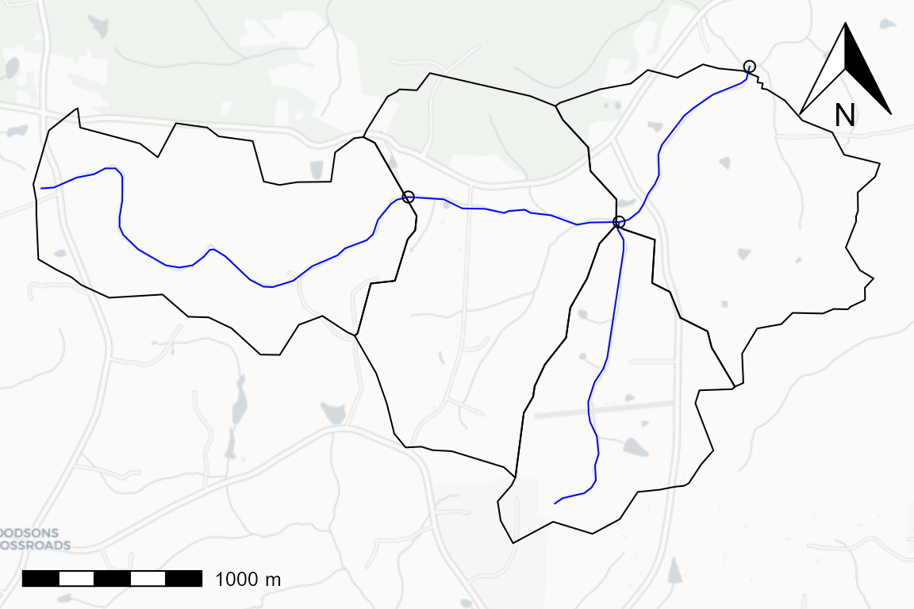

The following example shows how to work with data following the NHDPlusV2 schema.
# https://github.com/usgs-r/nhdplusTools library(nhdplusTools) #> USGS Support Package: https://owi.usgs.gov/R/packages.html#support # https://github.com/tidyverse/dplyr library(dplyr) #> #> Attaching package: 'dplyr' #> The following objects are masked from 'package:stats': #> #> filter, lag #> The following objects are masked from 'package:base': #> #> intersect, setdiff, setequal, union # https://github.com/r-spatial/sf library(sf) #> Linking to GEOS 3.8.1, GDAL 3.1.2, PROJ 6.3.2 library(hygeo) sample_data <- system.file("gpkg/nhdplus_subset.gpkg", package = "hygeo") plot_nhdplus(outlets = list(8895396), nhdplus_data = sample_data, overwrite = FALSE, plot_config = list(basin = list(border = NA), outlets = list(default = list(col = NA))), cachedir = tempdir(check = TRUE)) #> Zoom: 14 #> Map tiles by Carto, under CC BY 3.0. Data by OpenStreetMap, under ODbL. #> Audotdetect projection: assuming Google Mercator (epsg 3857) fline <- read_sf(sample_data, "NHDFlowline_Network") %>% align_nhdplus_names() %>% filter(COMID %in% get_UT(., 8895396)) catchment <- read_sf(sample_data, "CatchmentSP") %>% align_nhdplus_names() %>% filter(FEATUREID %in% fline$COMID) nexus <- get_nexus(fline) plot(st_transform(st_geometry(catchment), 3857), add = TRUE) plot(st_transform(st_geometry(nexus), 3857), add = TRUE)

Given the flowpaths, catchments, and nexuses, we can generate topology edge lists and data representations. The nexuses are outlet points along flowpaths in this case. Waterbodies are 1:1 with flowpath catchment realizations in this example but the data model will support 1:n or n:1 waterbody:catchment relationships.
catchment_prefix <- "catchment_" nexus_prefix <- "nexus_" waterbody_prefix <- "waterbody_" (catchment_edge_list <- get_catchment_edges(fline, catchment_prefix = catchment_prefix, nexus_prefix = nexus_prefix)) #> # A tibble: 7 x 2 #> ID toID #> <chr> <chr> #> 1 catchment_8895442 nexus_250031932 #> 2 catchment_8895520 nexus_250031930 #> 3 catchment_8895396 nexus_250031903 #> 4 catchment_8895402 nexus_250031930 #> 5 nexus_250031932 catchment_8895402 #> 6 nexus_250031930 catchment_8895396 #> 7 nexus_250031903 catchment_0 (waterbody_edge_list <- get_waterbody_edge_list(fline, waterbody_prefix = waterbody_prefix)) #> Warning in prepare_nhdplus(fline, 0, 0, 0, FALSE, warn = FALSE): Got NHDPlus #> data without a Terminal catchment. Attempting to find it. #> # A tibble: 4 x 2 #> ID toID #> <chr> <chr> #> 1 waterbody_8895442 waterbody_8895402 #> 2 waterbody_8895520 waterbody_8895396 #> 3 waterbody_8895396 waterbody_0 #> 4 waterbody_8895402 waterbody_8895396 (catchment_data <- get_catchment_data(catchment, catchment_edge_list)) #> Simple feature collection with 4 features and 3 fields #> geometry type: MULTIPOLYGON #> dimension: XY #> bbox: xmin: -79.16293 ymin: 35.97214 xmax: -79.11032 ymax: 35.99623 #> geographic CRS: WGS 84 #> # A tibble: 4 x 4 #> geom ID area_sqkm toID #> <MULTIPOLYGON [°]> <chr> <dbl> <chr> #> 1 (((-79.15822 35.98449, -79.15997 35.98514, -79… catchment… 1.86 nexus_25… #> 2 (((-79.13297 35.97544, -79.13245 35.9787, -79.… catchment… 1.28 nexus_25… #> 3 (((-79.13297 35.97544, -79.13369 35.97596, -79… catchment… 2.12 nexus_25… #> 4 (((-79.11932 35.98001, -79.12077 35.98198, -79… catchment… 1.77 nexus_25… (flowpath_data <- get_flowpath_data(fline, catchment_edge_list) %>% mutate(realized_catchment = gsub(waterbody_prefix, catchment_prefix, ID))) #> Simple feature collection with 4 features and 6 fields #> geometry type: MULTILINESTRING #> dimension: XYZ #> bbox: xmin: -79.16244 ymin: 35.97413 xmax: -79.11841 ymax: 35.99613 #> z_range: zmin: 0 zmax: 0 #> geographic CRS: WGS 84 #> # A tibble: 4 x 7 #> geom ID length_km slope_percent main_id toID #> * <MULTILINESTRING [°]> <chr> <dbl> <dbl> <dbl> <chr> #> 1 Z ((-79.16244 35.98999 0… catc… 2.78 0.0163 2.50e8 nexu… #> 2 Z ((-79.13053 35.97413 0… catc… 1.78 0.00903 2.50e8 nexu… #> 3 Z ((-79.12653 35.9883 0,… catc… 1.22 0.00424 2.50e8 nexu… #> 4 Z ((-79.13963 35.98956 0… catc… 1.20 0.00652 2.50e8 nexu… #> # … with 1 more variable: realized_catchment <chr> (nexus_data <- get_nexus_data(nexus, catchment_edge_list)) #> Simple feature collection with 3 features and 2 fields #> geometry type: POINT #> dimension: XY #> bbox: xmin: -79.13963 ymin: 35.9883 xmax: -79.11841 ymax: 35.99613 #> geographic CRS: WGS 84 #> # A tibble: 3 x 3 #> geometry ID toID #> <POINT [°]> <chr> <chr> #> 1 (-79.13963 35.98956) nexus_250031932 catchment_8895402 #> 2 (-79.12653 35.9883) nexus_250031930 catchment_8895396 #> 3 (-79.11841 35.99613) nexus_250031903 catchment_0
The outputs can be rendered into csv or json:
hygeo_list <- list(catchment = catchment_data, flowpath = flowpath_data, nexus = nexus_data, catchment_edges = catchment_edge_list, waterbody_edges = waterbody_edge_list) class(hygeo_list) <- "hygeo" temp_path <- file.path(tempdir(check = TRUE), "hygeo") dir.create(temp_path, recursive = TRUE, showWarnings = FALSE) temp_path <- write_hygeo(hygeo_list, out_path = temp_path, overwrite = TRUE) (hygeo_list_read <- read_hygeo(temp_path)) #> $catchment #> Simple feature collection with 4 features and 3 fields #> geometry type: MULTIPOLYGON #> dimension: XY #> bbox: xmin: -79.16293 ymin: 35.97214 xmax: -79.11032 ymax: 35.99623 #> geographic CRS: WGS 84 #> # A tibble: 4 x 4 #> ID area_sqkm toID geometry #> <chr> <dbl> <chr> <MULTIPOLYGON [°]> #> 1 catchment… 1.86 nexus_250… (((-79.15822 35.98449, -79.15997 35.98514, -7… #> 2 catchment… 1.28 nexus_250… (((-79.13297 35.97544, -79.13245 35.9787, -79… #> 3 catchment… 2.12 nexus_250… (((-79.13297 35.97544, -79.13369 35.97596, -7… #> 4 catchment… 1.77 nexus_250… (((-79.11932 35.98001, -79.12077 35.98198, -7… #> #> $flowpath #> Simple feature collection with 4 features and 6 fields #> geometry type: MULTILINESTRING #> dimension: XY #> bbox: xmin: -79.16244 ymin: 35.97413 xmax: -79.11841 ymax: 35.99613 #> geographic CRS: WGS 84 #> # A tibble: 4 x 7 #> ID length_km slope_percent main_id toID realized_catchm… #> <chr> <dbl> <dbl> <dbl> <chr> <chr> #> 1 catc… 2.78 0.0163 2.50e8 nexu… catchment_88954… #> 2 catc… 1.78 0.00903 2.50e8 nexu… catchment_88955… #> 3 catc… 1.22 0.00424 2.50e8 nexu… catchment_88953… #> 4 catc… 1.20 0.00652 2.50e8 nexu… catchment_88954… #> # … with 1 more variable: geometry <MULTILINESTRING [°]> #> #> $nexus #> Simple feature collection with 3 features and 2 fields #> geometry type: POINT #> dimension: XY #> bbox: xmin: -79.13963 ymin: 35.9883 xmax: -79.11841 ymax: 35.99613 #> geographic CRS: WGS 84 #> # A tibble: 3 x 3 #> ID toID geometry #> <chr> <chr> <POINT [°]> #> 1 nexus_250031932 catchment_8895402 (-79.13963 35.98956) #> 2 nexus_250031930 catchment_8895396 (-79.12653 35.9883) #> 3 nexus_250031903 catchment_0 (-79.11841 35.99613) #> #> $catchment_edges #> ID toID #> 1 catchment_8895442 nexus_250031932 #> 2 catchment_8895520 nexus_250031930 #> 3 catchment_8895396 nexus_250031903 #> 4 catchment_8895402 nexus_250031930 #> 5 nexus_250031932 catchment_8895402 #> 6 nexus_250031930 catchment_8895396 #> 7 nexus_250031903 catchment_0 #> #> $waterbody_edges #> ID toID #> 1 waterbody_8895442 waterbody_8895402 #> 2 waterbody_8895520 waterbody_8895396 #> 3 waterbody_8895396 waterbody_0 #> 4 waterbody_8895402 waterbody_8895396 #> #> attr(,"class") #> [1] "hygeo"